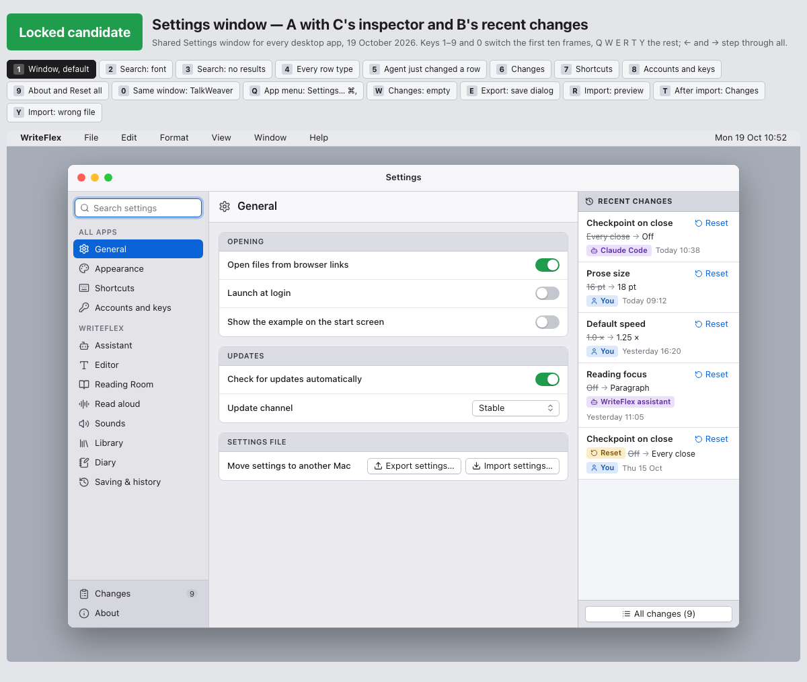
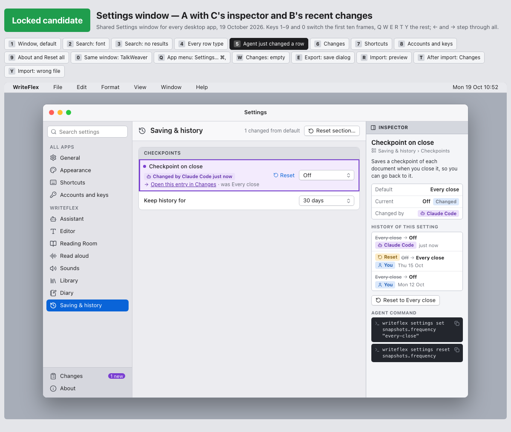
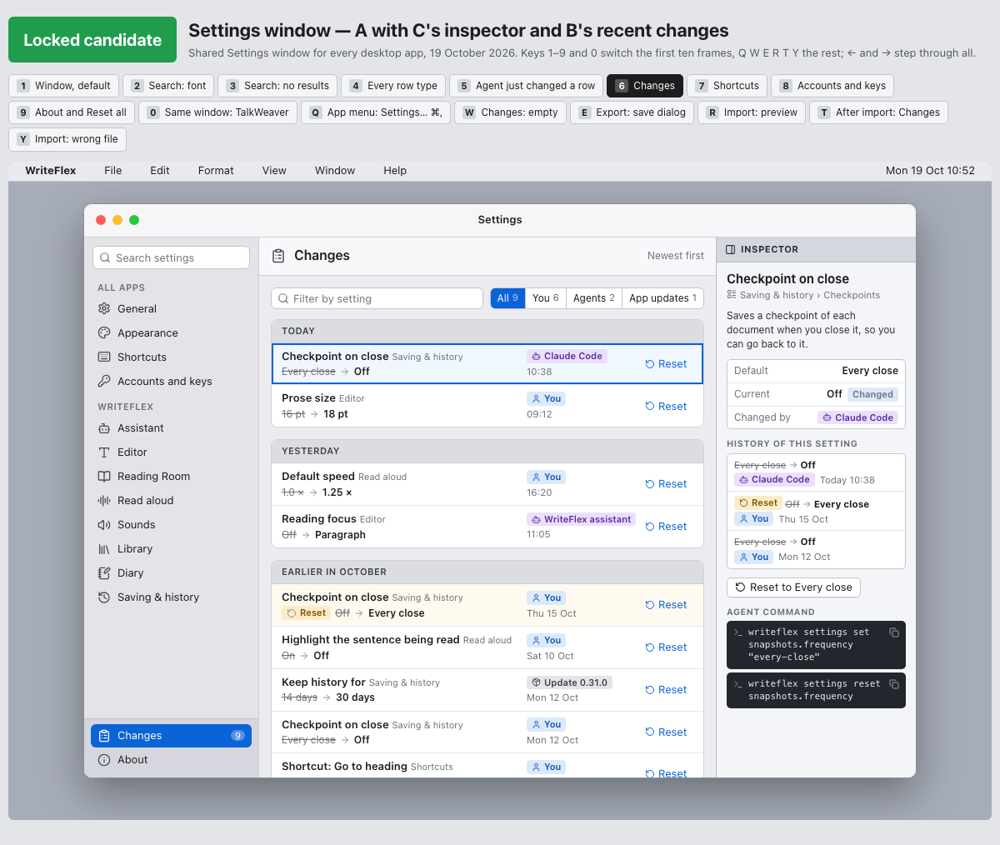
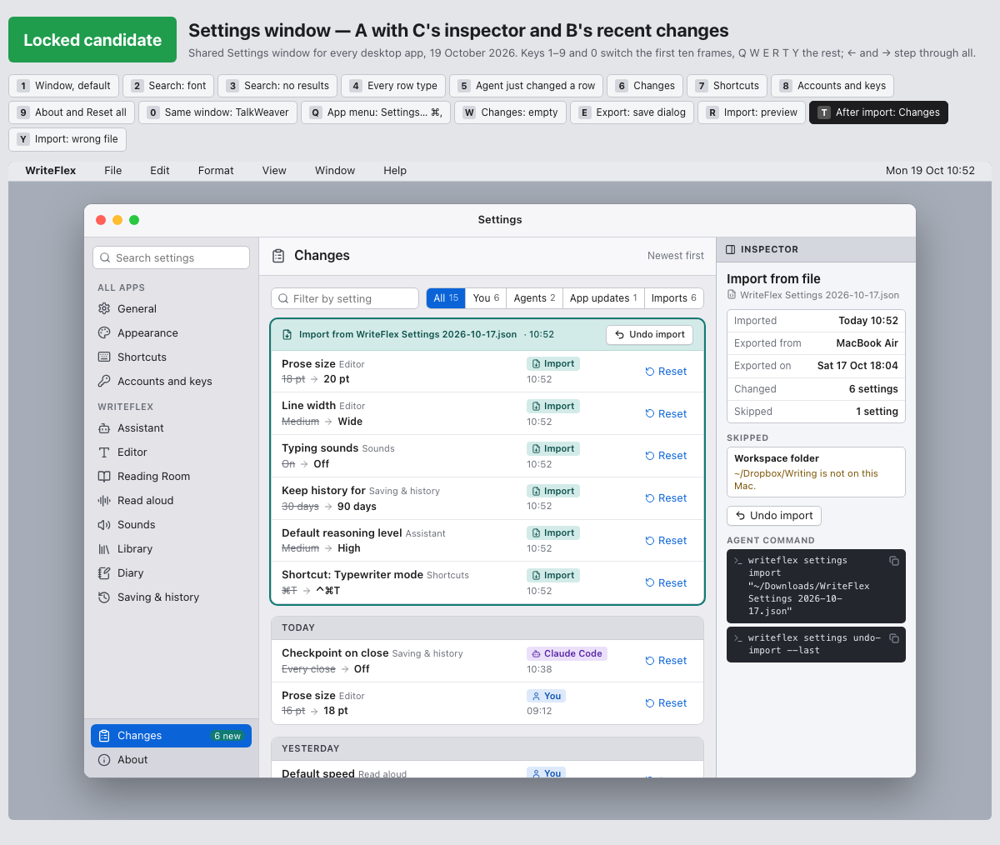

Settings history
Most apps have a settings window. I have not found an app that keeps a history of its settings, so this page describes the pattern for anyone who wants to add one to their own app.
Every change to a setting is recorded with the old value, the new value, when it happened and who made it. Who is one of four: you, a named AI agent, an app update, or an import from a settings file.
What you see in the window
When you open Settings and have not selected anything, the right-hand column lists the recent changes, each with its old and new value, who made it and when.

Select a setting and the same column shows the history of that one setting. If an agent has just changed a setting, its row is marked "Changed by" the agent's name, with a link to the entry.

The Changes page lists everything, newest first. You can filter it by You, Agents, App updates or Imports, and by setting.

What you can do with it
Each entry has a Reset button that puts that one setting back to its earlier value. You can also reset a whole section, or everything. Before you agree, the window tells you how many settings will change. Every reset is recorded as an entry of its own, so a reset can be traced too.
An import from a settings file appears in Changes as one group of entries, with a single Undo import button. Undo puts back every setting the import changed, except any you have changed again since.

Why it matters
An agent can read and change settings in the same way you can. With a history, its change is visible, shows the agent's name and can be reversed. You do not have to remember what a setting used to be.
Settings also move between Macs by hand: you export a file on one and import it on the other. The import is recorded as a group, so you can see what it changed and undo it.
The history never records account keys. They stay in the Mac's Keychain, and they are left out of exported files.
Rules for building it
- Record one entry for each setting changed. Changing a setting to the value it already has records nothing.
- Always record who made the change, whether it came from the window, an agent, an update or an import.
- Treat a reset as a change and record it too.
- Limit the size of the history. Keep the most recent 300 entries, and never cut an import in the middle.
- When the settings file is damaged, set it aside under a new name, start from the defaults, and record the repair as an entry.
- Keep account keys out of the history and out of exported files.